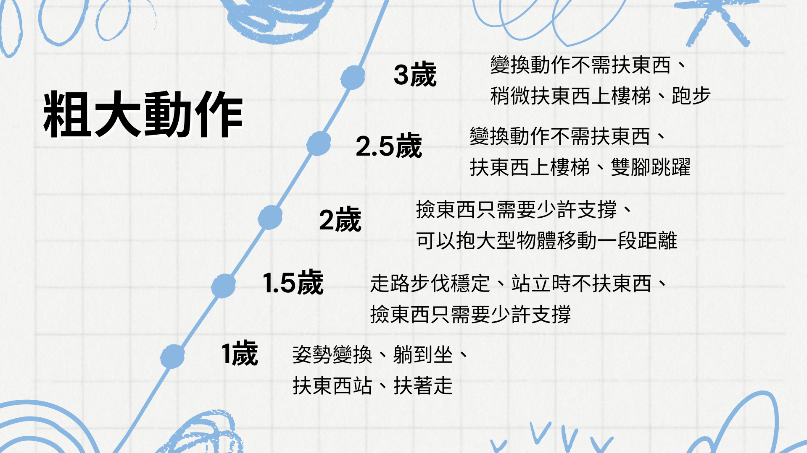
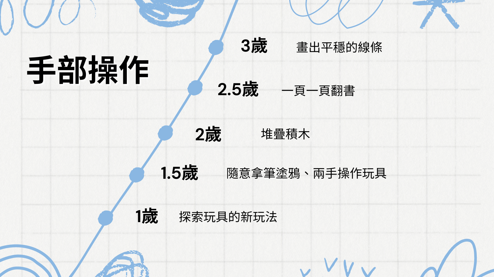
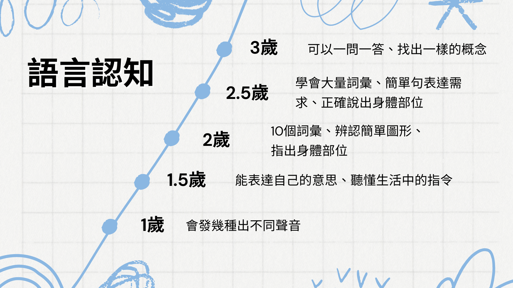
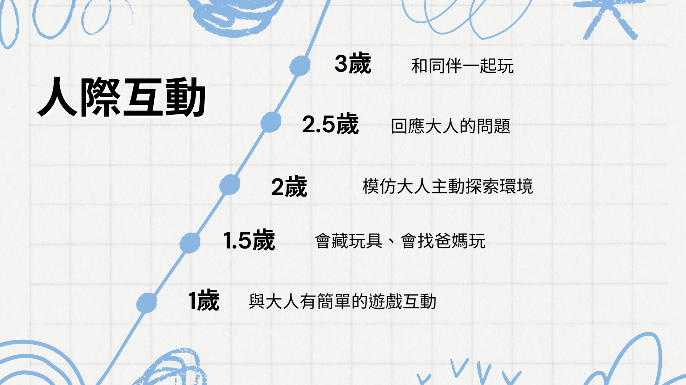
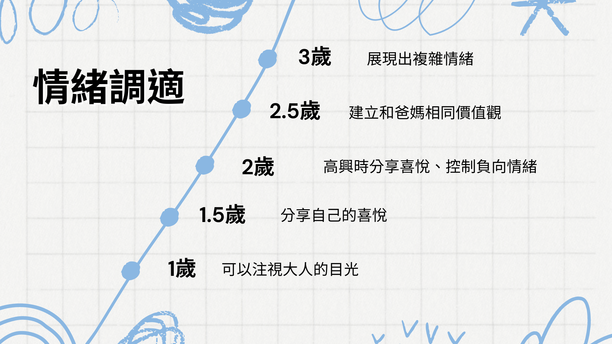

0-3 歲是孩子發展的關鍵期，這是孩子發展語言表達、認知功能、粗細動作、人際互動、情緒調適等學習功能的重要時期，正是需要爸媽大量的關注和陪伴，家庭生活在這個階段中，可以讓孩子建立安全依附和未來的社交上的正向表現。
常受邀前往幼兒園或托嬰中心進行篩檢，或是講解篩檢表的內容，讓家長們了解篩檢的重要性。雖然最終家長們常常延伸到許多教養方面的話題，如孩子愛亂丟玩具、對媽媽生氣、喜歡挑戰大人的底線等。
這兩種看似不相關的主題其實都有著密切的聯繫，因為在每個發展階段，孩子都需要發展出相應的技能。
五大發展面向與里程碑
粗大動作
涉及孩子的身體大肌肉群的運動技能的發展。這些動作通常包括爬行、行走、跑步、姿勢轉換等。觀察粗大動作發展是兒童整體發展的其中一個重點，因為它不僅影響孩子的運動能力，還關係到他們的自信心和社交能力。

手部操作
孩子對環境的探索、日常生活的自理都需要藉由自己的雙手來完成，透過雙手的觸摸，感知環境的不同，不同手部姿勢的操作，累積大量經驗後，做出最適當的調整，讓動作在最省力的狀態下，完美完成目標。

語言認知
孩子還不會說話前，就透過不同的聲音和狀態來表達需求，利用肢體和哭聲這類的非語言行為，和大人溝通。而大人需藉由觀察和回應孩子需求，分析和回覆不同的訊號，教導孩子學習語言、肢體和口語表達的技能。

人際互動
對孩子來說，人際互動發展是他們社會化的重要組成部分，不同階段的互動經驗，都可以成為下一階段的養分，在學會過程中學會理解他人、建立良好關係、共同協作與分享、解決衝突等多方面的能力。

情緒調適
情緒發展受到認知和環境變化的影響，孩子漸漸學會表達不同的感受和狀態。也學會判斷自己和他人的情緒，也試著在不同的狀況下做出適當的回應，逐漸學會調節自我的情緒。

特別需要留意的警訊
除上述五大方向，更必須特別注意孩子是否出現這三種特徵：
- 沒有聲音、無法模仿說話、口齒不清
- 持續出現不尋常的重複動作
- 自顧自的玩，不理會大人、不願意配合或跟從指令
出現其中一種狀況就需要密切關注孩子的發展，這可能代表孩子在發展上存在一些問題。及時識別和應對可能的問題，以確保孩子獲得最佳的環境和支持。
即便孩子在相應年紀還無法達到發展里程碑，爸媽也無需過度焦慮，可以多加觀察、引導；如果觀察和引導後，發展狀態還是持續不前，還無法有所進展，建議爸媽找專業的治療師進行協助，及時識別和應對可能的問題，以確保孩子獲得最佳的環境和支持。讓爸媽和孩子都可以輕鬆愉快的成長。